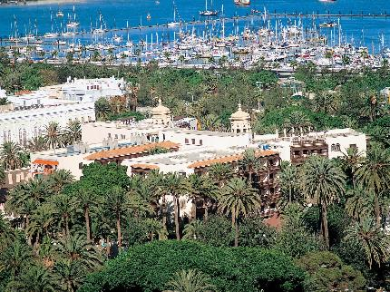
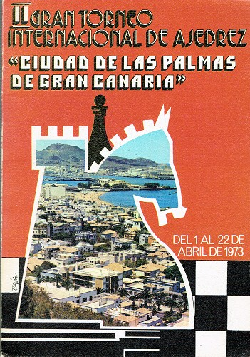
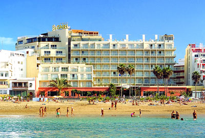

Jan van Reek
|
The city of Las Palmas
lies on Gran Canaria, an island southwest of the Spanish
mainland. A new series of tournaments was started, before the
event in Palma de Mallorca finished. The publisher Jorge Puig
Laborda became the director of the new tournaments in Las
Palmas. The event was called 'Gran torneo internacional de
ajedrez Ciudad Las Palmas Gran Canaria'. Sponsor money came
from the tourist industry. Sixteen players competed in the great
Hotel Santa Catalina from 29 v until 17 vi 1972. The first
installment was won by Portisch after a great competition with
Larsen and Smyslov. Larsen made a weaker contribution in 1974
and had to withdraw in 1975. His prominent place was taken by
Ljubojevic. Larsen was back in 1976! He competed with Geller for
the first place. Geller won in the last round. Karpov showed
superiority in 1977. A hard battle until the last round was fought in 1978.
Six players carried out double rounds in 1981. Timman won the
strong tournament. An interzonal happened in 1982. Ribli and
Smyslov qualified for the candidates' matches.
|
|  |  |  |
| Santa Catalina (hotel in 1972) | Poster in 1973 | Reina Isabel (hotel in 1982) |
Winners in Las Palmas
| 1972 Portisch 1973 Petrosian and Stein 1974 Ljubojevic 1975 Ljubojevic 1976 Geller 1977 Karpov |
1978 Sax and Tukmakov 1979 Vaganian 1980 Miles, Petrosian and Geller 1981 Timman 1982 Ribli (interzonal) |